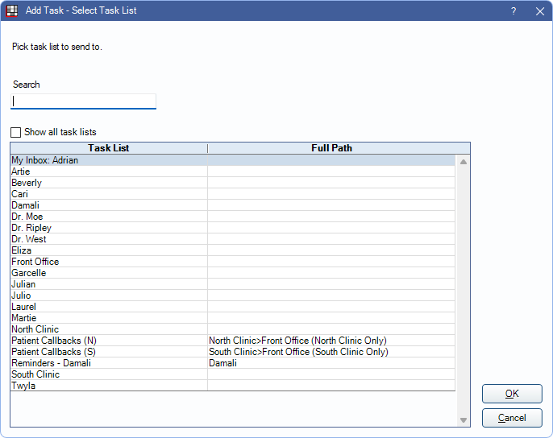

Task
Tasks are a way for intra-office communication, setting reminders, and more.
In the Main Menu, click Tasks.

Tasks can be added to a Task List or sent to a User Inbox.
- When a user is subscribed to a task list, new tasks added to that list will pop up.
- Tasks attached to patients also show in the patient's Chart Module, Progress Notes.
- If a task is left open on the screen, it will automatically refresh if an edit is made or a note is added by another user.
- When a user receives a new task, a popup shows with a chime sound.
- To block task popups at a user level, click Manage Blocks in the Tasks Area.
- If a task is added when the Open Tasks or Main tab is selected, the task will be added under the Main tab.
Add a General Task
- To add the task to a specific task list, highlight the task list first.
- In the Tasks area, click Add Task.
- Enter the task information. See Task Window.
- Click OK to send the task to the specified task list. Everyone subscribed to the task list will be notified of the new task. Or, click Send To, then select an inbox to send the task to.
Add a Task attached to the Currently Selected Patient
- In the Main Toolbar, click Tasks. All task lists with a type of Patient are listed by default.
- Select the Task List, then click OK.
Show all task lists: Check this box to display all task lists in the grid.
Task List: Displays the name of the task list.
Full Path: Displays where a sub-task list resides. (e.g., Reminders is within the the Admin task list)
 - Enter the task information. See Task Window.
- Click OK to send the task to the specified task list. Everyone subscribed to the task list will be notified of the new task. Or, click Send To, then select an inbox to send the task to.
Add a Task and Send Copies to Multiple Task Lists
- In the Tasks area, click Add Task.
- Enter the task information. See Tasks Window.
- Click Send To.
- Check the box for Send copies to multiple.
- Select the task lists and click OK.
Note: The task will be copied and sent to multiple lists at once. Each copied task will have its own task number assigned.
Reply to a Task / Add a Note to a Task
- Open the task.
- Click Add to add a Note.

- Enter the Note. Click Auto Note to insert Auto Notes.
- Click OK to save.
- Click OK to leave the task in the current task list. Or, click Send To, then select an inbox to send the task to. Or, click Reply to send the task to the last person who sent it.
Navigating
Tasks can include links to outside sources or places within the program. Right-click in the description or note to open a link.
- File Explorer: Opens a folder in the File Explorer.
- UNC paths must end in a file or a backslash. For example \\Server\OpenDentalExports won't work, but \\Server\OpenDentalExports\ or \\Server\OpenDentalExports\File.txt will.
- If a folder name contains punctuation or special characters, the folder may not open.
- PatNum: Select the patient in Open Dental. Enter the patnum immediately after the colon (e.g., patnum:234).
- TaskNum: Open the task in a new window. Enter the task number immediately after the colon (e.g., tasknum:789).
- Web: Open a URL in the default web browser.
- Wiki: Open the corresponding wiki page. Enter the page name in two brackets (e.g., [[page name]]). Requires Detect wiki links in textboxes and grids checked in Wiki Setup.

Receiving a Task
If tasks are not popping up on your screen, ensure the following:
- Task lists allow for popups. Verify tasks lists selected in Manage Blocks.
- Your user is assigned to your inbox.
- You are subscribed to the task list.
- You are logged in as your own user.